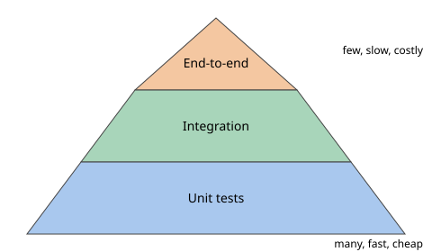

You have written a data-cleaning function. It works on your five test rows. Next month a teammate changes it, and a wrong number reaches a manager's dashboard. Professional engineers prevent this with automatic tests and automatic style checks. In this chapter you will write tests with unittest and pytest, replace slow or risky parts with mocks and fakes, build code step by step with TDD, measure coverage, and set up the tools that keep a team's code clean. You will use one running example, a small slugify function and a tiny price-lookup service, so each idea builds on the last.
A note on what was run. This machine has only the Python 3.14 standard library and no network. So
pytest,pytest-cov,pytest-mock,black,ruff,mypyandpre-commitwere not run here. Their snippets are standard usage, marked "not run here". The same ideas were run with the standard library (unittest,unittest.mock,sqlite3,trace), and all output below is real.
A test is a piece of code that calls your code with known input and checks the output against the answer you expect. If they differ, the test fails. A set of tests is a test suite. When you run the suite after every change, a failure points to the change that broke things. This is called catching a regression (an old feature that stops working).
Tests come in three sizes.

/\ few: slow, costly, flaky
/E2E\
/------\
/integr. \ some: medium speed
/----------\
/ unit \ many: fast, cheap, precise
/--------------\Why a pyramid and not an upside-down one? Unit tests are fast and tell you exactly where the bug is. E2E tests are slow and a failure only says "something is wrong somewhere". You want many cheap tests at the bottom and few expensive tests on top.
Tests need input. Good test data is small, explicit, and lives next to the test. Use three kinds of cases:
| Kind | Example for slugify | Why |
|---|---|---|
| Normal | "Hello World" | The main promise |
| Edge | "", one character, very long text | Boundaries break most code |
| Bad | None, wrong type | Check clear errors |
Never use real customer data in tests. Make small fake data by hand, or generate it with a fixed random seed so the test is repeatable.
| Item | Example | Where it appears in the job |
|---|---|---|
| Unit test | slugify("Hello World") == "hello-world" | Checking one cleaning function |
| Integration test | Function plus in-memory SQLite | Checking a data-access layer |
| E2E test | Call the real API, read the stored row | Smoke test after a deploy (like a quick taste check before opening the restaurant) |
| Regression | Yesterday's bug returns | Why CI runs on every change |
Problem 10.1.1 Write a function add(a, b) and four tests: two integers, floats, a deliberately wrong expectation, and a wrong type. Run them and read the report.
| Step 1 | Write the function and the unittest.TestCase class. unittest is the testing module that ships with Python. Each method starting with test_ is one test. |
|---|---|
| Step 2 | Run the file with verbosity=2 to list each test. |
| Step 3 | Read the failure. It shows the line, and 4 != 5. |
import unittest
def add(a, b):
return a + b
class TestAdd(unittest.TestCase):
def test_ints(self):
self.assertEqual(add(2, 3), 5)
def test_floats(self):
self.assertAlmostEqual(add(0.1, 0.2), 0.3)
def test_bad(self):
self.assertEqual(add(2, 2), 5)
def test_type(self):
with self.assertRaises(TypeError):
add("a", 1)
if __name__ == "__main__":
unittest.main(verbosity=2)Real output:
test_bad (__main__.TestAdd.test_bad) ... FAIL
test_floats (__main__.TestAdd.test_floats) ... ok
test_ints (__main__.TestAdd.test_ints) ... ok
test_type (__main__.TestAdd.test_type) ... ok
======================================================================
FAIL: test_bad (__main__.TestAdd.test_bad)
----------------------------------------------------------------------
Traceback (most recent call last):
File "/private/tmp/w10/t1.py", line 10, in test_bad
self.assertEqual(add(2, 2), 5)
~~~~~~~~~~~~~~~~^^^^^^^^^^^^^^^^^^^^
AssertionError: 4 != 5
----------------------------------------------------------------------
Ran 4 tests in 0.003s
FAILED (failures=1)assertAlmostEqual for floats because 0.1 + 0.2 is 0.30000000000000004, not exactly 0.3.2 + 2 is 4, and the report says 4 != 5, so the failure message is telling the truth: our expected value (5) was the wrong one.Before you run it, predict: how many tests will say ok? (Answer: three.) If you remove assertAlmostEqual and write assertEqual(add(0.1, 0.2), 0.3), the report would show 0.30000000000000004 != 0.3, so use the almost-equal form.
Problem 10.1.2 Test slugify(text), which turns a title into a URL piece, using normal, edge and several cases at once with subTest.
| Step 1 | Write the function with re.sub (regex from Chapter 3). Replace every run of characters that are not letters or digits with -, then trim - at the ends. |
|---|---|
| Step 2 | Write tests. subTest runs each case separately, so one failure does not hide the others. |
# slug.py
import re
def slugify(text):
text = text.strip().lower()
text = re.sub(r"[^a-z0-9]+", "-", text)
return text.strip("-")# test_slug.py
import unittest
from slug import slugify
class T(unittest.TestCase):
def test_basic(self):
self.assertEqual(slugify("Hello World"), "hello-world")
def test_punct(self):
self.assertEqual(slugify(" Python, 101! "), "python-101")
def test_empty(self):
self.assertEqual(slugify(""), "")
def test_subtests(self):
cases = [("A B", "a-b"), ("--x--", "x"), ("C++ Tips", "c-tips")]
for raw, want in cases:
with self.subTest(raw=raw):
self.assertEqual(slugify(raw), want)python3 -m unittest -v test_slugtest_basic (test_slug.T.test_basic) ... ok
test_empty (test_slug.T.test_empty) ... ok
test_punct (test_slug.T.test_punct) ... ok
test_subtests (test_slug.T.test_subtests) ... ok
----------------------------------------------------------------------
Ran 4 tests in 0.000s
OKpython3 -m unittest finds files named test*.py when you run python3 -m unittest discover."C++ Tips" lower-cased is c++ tips. The run "++ " is not a letter or digit, so it becomes one -, giving c-tips. This matches the test."₹1,200" into 1200.None, duplicate keys, a time zone change. Add at least one edge and one bad case for each function.== on floats. Use assertAlmostEqual (unittest) or pytest.approx (pytest).Check yourself
assertEqual(0.1 + 0.2, 0.3) a bad test? Answer: floats are stored in binary, and the sum is 0.30000000000000004, so equality fails.pytest is a testing framework that uses plain assert statements. A fixture provides set-up data to tests, and parametrize runs one test with many inputs.unittest makes you write a class and remember names like assertEqual. pytest lets you write a plain function and a plain assert. It then prints a rich explanation when the assert fails. It is the standard in industry.pytest is a third-party tool (pip install pytest). It finds files named test_*.py and functions named test_*. You write assert condition. If the condition is false, the test fails, and pytest shows the values on both sides.
# test_slug_pytest.py (not run here)
import pytest
from slug import slugify
def test_basic():
assert slugify("Hello World") == "hello-world"
def test_empty():
assert slugify("") == ""
def test_none_raises():
with pytest.raises(AttributeError):
slugify(None)
def test_float_close():
assert 0.1 + 0.2 == pytest.approx(0.3)Run with pytest -q (quiet) or pytest -v (verbose). Useful flags: -x stops at the first failure, -k name runs tests whose name contains name, --lf re-runs only the tests that failed last time.
@pytest.mark.parametrize runs the same test body with different inputs. Each case shows as its own test, so a failure names the exact case. It is the pytest version of the subTest loop above.
# not run here
import pytest
from slug import slugify
@pytest.mark.parametrize(
"raw, want",
[
("A B", "a-b"),
("--x--", "x"),
("C++ Tips", "c-tips"),
("", ""),
],
)
def test_slugify_cases(raw, want):
assert slugify(raw) == wantA fixture is a function that prepares something a test needs (a database, a temp file, sample data). Tests ask for it by writing its name as an argument. pytest runs the fixture and passes the result. Code after yield is the clean-up.
# not run here
import sqlite3
import pytest
@pytest.fixture
def conn():
c = sqlite3.connect(":memory:")
c.execute("CREATE TABLE users(id INTEGER PRIMARY KEY, name TEXT UNIQUE)")
yield c # the test runs here
c.close() # clean-up, even if the test failed
def test_insert(conn):
conn.execute("INSERT INTO users(name) VALUES (?)", ("ravi",))
rows = conn.execute("SELECT name FROM users").fetchall()
assert rows == [("ravi",)]Fixture scope controls how often it is rebuilt: function (default, every test), module, session (once for the whole run). Use the widest scope only for expensive, read-only things. Built-in fixtures worth knowing: tmp_path (a fresh temporary folder), capsys (capture printed text), monkeypatch (change things for one test, see 10.3). A file called conftest.py holds fixtures shared by many test files.
Since pytest is not installed here, this is the unittest form of fixture and clean-up, which we can run. setUp runs before each test, tearDown after, and tempfile.TemporaryDirectory gives a fresh folder.
Words you need. Setup is code that prepares the world before a test. Teardown is code that cleans up after. A fixture is a named setup/teardown that pytest gives to tests.
| Item | Example | Where it appears in the job |
|---|---|---|
| Fixture | In-memory DB with a table | Every DB or API test |
| Parametrize | 15 messy phone numbers, 15 clean answers | Data-cleaning rules |
tmp_path | Fresh temp folder | Testing file readers and writers |
conftest.py | Shared fixtures for the whole project | Large test suites |
Problem 10.2.1 Test a save/load pair of JSON functions using a temporary folder, so no test leaves files behind.
| Step 1 | Write save(path, obj) and load(path) using pathlib and json (Chapter 5). |
|---|---|
| Step 2 | In the test, create a temp folder with a context manager, so it is deleted at the end. |
| Step 3 | Save, load, compare. |
import tempfile, pathlib, unittest, json
def save(path, obj): path.write_text(json.dumps(obj))
def load(path): return json.loads(path.read_text())
class T(unittest.TestCase):
def test_roundtrip(self):
with tempfile.TemporaryDirectory() as d:
p = pathlib.Path(d) / "x.json"
save(p, {"a": [1, 2]})
self.assertEqual(load(p), {"a": [1, 2]})
unittest.main(argv=["x"], verbosity=1)----------------------------------------------------------------------
Ran 1 test in 0.010s
OKtmp_path fixture.{"a": [1, 2]} and loaded the same dictionary back, so nothing was lost in JSON. The test touched no real project file.Problem 10.2.2 Read what a failing assertion on two dictionaries looks like in unittest.
| Step 1 | Compare {'a':1,'b':2} with {'a':1,'b':3}. |
|---|---|
| Step 2 | Read the diff marks. The ^ shows the exact character that differs. |
AssertionError: {'a': 1, 'b': 2} != {'a': 1, 'b': 3}
- {'a': 1, 'b': 2}
? ^
+ {'a': 1, 'b': 3}
? ^b differs: 2 against 3. pytest prints a similar diff for a plain assert.a is 1 in both, key b is 2 and 3. The ^ marks sit under the 2 and the 3. test_x(conn) fixture conn()
| asks for "conn" |
|--------------------------->| build DB
|<-------- DB object --------| (yield)
| run test body |
|--------------------------->| clean-up after yieldparametrize is perfect for data-cleaning rules: list 15 messy inputs and the clean output you want.pytest on every pull request.capsys.def test_x(conn) and no fixture called conn exists, pytest stops with an error that says fixture 'conn' not found (not run here). Check the spelling or add the fixture to conftest.py.session scope when tests change it. One test then pollutes the next. Start with the default scope.Check yourself
yield in a fixture do? Answer: it runs as clean-up after the test finishes.parametrize for? Answer: to run one test body with many input cases, each reported separately.monkeypatch temporarily replaces functions or values during a test, and database tests use a temporary database.unittest.mock.Mock is both a stub and a mock.| Item | Example | Where it appears in the job |
|---|---|---|
| Stub | Always returns {"status": 200} | Skipping a slow partner API |
| Fake | Dict-backed FakeClient | Testing logic without a DB |
| Mock | client.get.assert_called_once() | Checking "email sent once" |
| Spy | Real function wrapped to count calls | Checking a retry loop |
Rule of thumb: prefer a fake when the behaviour is simple, because it tests the result. Use a mock when the important thing is that a call happened (email sent, once).
Problem 10.3.1 fetch_price(client, sku) calls client.get(...) and returns the price. total sums prices for many SKUs. Test total with no network, using a Mock and also a Fake.
| Step 1 | Pass the client in as an argument. This is dependency injection (Chapter 8): the function does not build its own client, so tests can pass a different one. |
|---|---|
| Step 2 | Use side_effect with a list so each call returns the next item. Then assert the call count. |
| Step 3 | Write a FakeClient class with a dictionary and test again. |
import unittest
from unittest import mock
def fetch_price(client, sku):
resp = client.get(f"/price/{sku}")
if resp["status"] != 200:
raise ValueError("bad status")
return resp["body"]["price"]
def total(client, skus):
return sum(fetch_price(client, s) for s in skus)
class TestMock(unittest.TestCase):
def test_total_with_mock(self):
client = mock.Mock()
client.get.side_effect = [
{"status": 200, "body": {"price": 100}},
{"status": 200, "body": {"price": 250}},
]
self.assertEqual(total(client, ["a", "b"]), 350)
self.assertEqual(client.get.call_count, 2)
client.get.assert_any_call("/price/a")
def test_error(self):
client = mock.Mock()
client.get.return_value = {"status": 500, "body": {}}
with self.assertRaises(ValueError):
fetch_price(client, "x")
class FakeClient:
def __init__(self, prices): self.prices = prices
def get(self, path):
sku = path.rsplit("/", 1)[1]
if sku in self.prices:
return {"status": 200, "body": {"price": self.prices[sku]}}
return {"status": 404, "body": {}}
class TestFake(unittest.TestCase):
def test_total(self):
self.assertEqual(total(FakeClient({"a": 1, "b": 2}), ["a", "b"]), 3)
def test_missing(self):
with self.assertRaises(ValueError):
total(FakeClient({}), ["zzz"])Real output (this file also contained the patch and sqlite tests shown later, 9 tests in all):
test_missing (__main__.TestFake.test_missing) ... ok
test_total (__main__.TestFake.test_total) ... ok
test_error (__main__.TestMock.test_error) ... ok
test_total_with_mock (__main__.TestMock.test_total_with_mock) ... ok
test_default (__main__.TestPatch.test_default) ... ok
test_env (__main__.TestPatch.test_env) ... ok
test_time (__main__.TestPatch.test_time) ... ok
test_add (__main__.TestRepo.test_add) ... ok
test_unique (__main__.TestRepo.test_unique) ... ok
----------------------------------------------------------------------
Ran 9 tests in 0.004s
OKtotal returned 350 with the mock and 3 with the fake, and both error paths raised ValueError. No network was used.call_count confirmed.mock.patch("module.name") swaps a name for a mock during a test and restores it afterwards. pytest's monkeypatch fixture does the same job for attributes and environment variables, and pytest-mock gives a mocker.patch(...) fixture.
# not run here: pytest style
def test_user_from_env(monkeypatch):
monkeypatch.setenv("APP_USER", "asha")
assert home_name() == "asha"
def test_with_mocker(mocker): # needs pytest-mock
mocker.patch("time.time", return_value=1000.0)The unittest forms, which ran in the output above, are @mock.patch.dict(os.environ, {"APP_USER": "asha"}) and @mock.patch("time.time", return_value=1000.0).
Problem 10.3.2 The famous trap: patch where the name is used, not where it is defined. bill.py does from util import rate. Which patch changes the result of to_inr(2) when the real rate() is 83.0?
| Step 1 | from util import rate copies the name rate into module bill. Now bill.rate and util.rate are two names for the same function. |
|---|---|
| Step 2 | Patching util.rate changes only the util name. bill still points to the old function. |
| Step 3 | Patch bill.rate instead, and run all three cases. |
from unittest import mock
import bill, util
with mock.patch("util.rate", return_value=100.0):
print("patch util.rate ->", bill.to_inr(2))
with mock.patch("bill.rate", return_value=100.0):
print("patch bill.rate ->", bill.to_inr(2))
print("no patch ->", bill.to_inr(2))patch util.rate -> 166.0
patch bill.rate -> 200.0
no patch -> 166.0bill.rate works (result 200.0 = 2 × 100). Patching util.rate left the answer at 166.0 = 2 × 83.Before you run it, predict the first line. Most beginners guess 200.0 and get 166.0, which is the typical wrong version.
A bare Mock() accepts any attribute, so a typo can pass silently. Give it a spec so only real attributes exist. Modern Python also refuses misspelled assert helpers.
from unittest import mock
m2 = mock.Mock(spec=["get"])
try:
m2.post()
except AttributeError as e:
print("AttributeError:", e)
m3 = mock.Mock()
m3.assert_called_once_wiht()AttributeError: Mock object has no attribute 'post'
...
AttributeError: 'assert_called_once_wiht' is not a valid assertion. Use a spec for the mock if 'assert_called_once_wiht' is meant to be an attribute.. Did you mean: 'assert_called_once_with'?mock.create_autospec(real_object) copies the real signature, so wrong argument counts also fail.
sqlite3.connect(":memory:") makes a database in RAM that vanishes when closed. It is perfect for fast integration tests of your data-access code. (It is not Postgres, so dialect-specific features need a real Postgres in CI, for example via Docker.)
Problem 10.3.3 Test a Repo class that adds users and rejects duplicates.
| Step 1 | In setUp, open a fresh in-memory DB and create the table. In tearDown, close it. |
|---|---|
| Step 2 | Test insertion order and the UNIQUE rule. |
| Step 3 | Notice the code uses ? placeholders. This is also the defence against SQL injection (Chapter 13). |
import sqlite3, unittest
class Repo:
def __init__(self, conn):
self.conn = conn
conn.execute("CREATE TABLE users(id INTEGER PRIMARY KEY, name TEXT UNIQUE)")
def add(self, name):
cur = self.conn.execute("INSERT INTO users(name) VALUES (?)", (name,))
return cur.lastrowid
def names(self):
return [r[0] for r in self.conn.execute("SELECT name FROM users ORDER BY id")]
class TestRepo(unittest.TestCase):
def setUp(self):
self.conn = sqlite3.connect(":memory:")
self.repo = Repo(self.conn)
def tearDown(self):
self.conn.close()
def test_add(self):
self.repo.add("ravi"); self.repo.add("meena")
self.assertEqual(self.repo.names(), ["ravi", "meena"])
def test_unique(self):
self.repo.add("ravi")
with self.assertRaises(sqlite3.IntegrityError):
self.repo.add("ravi")test_unique inserts "ravi" twice and sqlite3.IntegrityError is raised, which proves the UNIQUE rule is active. Real run: your code --> HTTP client --> internet --> price service
Unit test: your code --> Mock/Fake (answers you chose, instantly)
Integration: your code --> real SQLite (in memory)Check yourself
from util import rate in bill.py? Answer: bill.rate.:memory: SQLite good for tests? Answer: it is fast, needs no setup, and disappears on close, so tests stay isolated.TDD is not required everywhere. It shines for logic with clear rules (parsers, calculations, validators). It is awkward for exploratory data work in notebooks. Also, when you find a bug, write a failing test that reproduces it first, then fix it. That bug can never come back silently.
Problem 10.4.1 Build fizzbuzz(n) by TDD: 3 gives "Fizz", 5 gives "Buzz", 15 gives "FizzBuzz", others give the number as text.
| Step 1 (Red) | Write four tests and a stub that raises NotImplementedError. Run. |
|---|---|
| Step 2 (Green, part 1) | Handle only the multiples of 3. Run again and see the remaining failures. |
| Step 3 (Green and refactor) | Build the text from parts, and fall back to the number. Run until green. |
# test_fizz.py
import unittest
from fizz import fizzbuzz
class T(unittest.TestCase):
def test_plain(self): self.assertEqual(fizzbuzz(1), "1")
def test_fizz(self): self.assertEqual(fizzbuzz(3), "Fizz")
def test_buzz(self): self.assertEqual(fizzbuzz(5), "Buzz")
def test_both(self): self.assertEqual(fizzbuzz(15), "FizzBuzz")Red: fizz.py is def fizzbuzz(n): raise NotImplementedError.
File "/private/tmp/w10/tdd/fizz.py", line 2, in fizzbuzz
raise NotImplementedError
NotImplementedError
----------------------------------------------------------------------
Ran 4 tests in 0.002s
FAILED (errors=4)Step 2: only if n % 3 == 0: return "Fizz" then return str(n).
AssertionError: '5' != 'Buzz'
- 5
+ Buzz
----------------------------------------------------------------------
Ran 4 tests in 0.002s
FAILED (failures=2)Two failures remain: 5 and 15. Final code:
def fizzbuzz(n):
out = ""
if n % 3 == 0:
out += "Fizz"
if n % 5 == 0:
out += "Buzz"
return out or str(n)....
----------------------------------------------------------------------
Ran 4 tests in 0.000s
OK"Fizz" + "Buzz", 1 → "1". All four match the final code.Code coverage is the percent of your code lines that ran during the tests. With pytest you use the pytest-cov plugin:
# not run here
pip install pytest-cov
pytest --cov=mypackage --cov-report=term-missingterm-missing lists the line numbers no test touched. The standard library has a rough equivalent, trace, which we can run.
Problem 10.4.2 grade(score) returns A for 90+, B for 75+, else C. Two tests only: 95 and 10. Which line is never executed?
| Step 1 | Write cov.py and test_cov.py with the two tests. |
|---|---|
| Step 2 | Run the tests under python3 -m trace --count --missing -C covout --module unittest test_cov. |
| Step 3 | Read covout/cov.cover. A line starting with >>>>>> never ran. |
1: def grade(score):
2: if score >= 90:
1: return "A"
1: if score >= 75:
>>>>>> return "B"
1: return "C"return "B" never ran, because no test used a score between 75 and 89. Add test_b with 80 and a boundary test with 75 and 74.ifs. Neither can reach return "B", so the report is right.Before you run it, predict which line is marked. Then compare with the report above.
| Item | Example | Where it appears in the job |
|---|---|---|
| Line coverage | 4 of 5 lines ran = 80% | CI quality gate |
| Branch coverage | Both sides of each if ran | Finding untested error paths |
| Regression test | Test written from a bug report | Support-ticket fixes |
100% coverage means every line ran. It does not mean every line was checked. A test with no assert gives coverage and no safety. Use coverage to find untested areas, not as a score to chase. Many teams set a floor (for example 80%) and fail CI below it. Branch coverage (--cov-branch) also checks that both sides of every if ran.
RED ----------> GREEN ----------> REFACTOR
(failing test) (smallest code) (clean, tests stay green)
^ |
+------------- next behaviour --------+Check yourself
>>>>>> in a trace report. What does it mean? Answer: no test executed that line.black) rewrites code into a consistent style, a linter (such as ruff) finds likely mistakes, and a type checker checks types. pre-commit runs these tools automatically before each commit.| Tool | Job | Changes your code? | Typical command |
|---|---|---|---|
black | Formats code in one fixed style | Yes | black . |
ruff | Very fast linter (and formatter, ruff format) | Lint: with --fix | ruff check . |
mypy | Checks type hints (Chapter 9) | No | mypy src |
pre-commit | Runs checks automatically at git commit | Depends on hooks | pre-commit install |
All four are third-party (pip install), not run here. Many teams now use ruff for both lint and format and drop black. Either is fine; the point is one agreed tool.
pyproject.toml# pyproject.toml (not run here; standard keys)
[tool.black]
line-length = 88
[tool.ruff]
line-length = 88
[tool.ruff.lint]
select = ["E", "F", "I", "B"] # pycodestyle errors, pyflakes, import order, bugbear
[tool.mypy]
python_version = "3.12"
strict = trueF rules find unused imports and undefined names. I sorts imports. B (bugbear) catches classic traps such as the mutable default argument. The set of rule letters can change between versions, so check the tool's documentation.
pre-commit reads .pre-commit-config.yaml. Each hook runs on the files you are about to commit. If a hook fails or edits a file, the commit stops, you re-add the files and commit again.
# .pre-commit-config.yaml (not run here)
repos:
- repo: https://github.com/astral-sh/ruff-pre-commit
rev: vX.Y.Z # put the current release tag here
hooks:
- id: ruff
args: [--fix]
- id: ruff-format
- repo: https://github.com/pre-commit/mirrors-mypy
rev: vX.Y.Z # put the current release tag here
hooks:
- id: mypy# not run here
pip install pre-commit
pre-commit install # sets up the git hook once
pre-commit run --all-files # check the whole repo now| Item | Example | Where it appears in the job |
|---|---|---|
| Formatter | black . rewrites quotes and spacing | Zero style arguments in review |
| Linter | ruff check . flags an unused import | Catching bugs before running |
| Type checker | mypy src flags double("5") | Data code with wrong column types |
| pre-commit | Runs hooks at git commit | Every team repo |
Here is the kind of bug a linter finds, and how running the code shows it.
Problem 10.5.1 The code below has the "mutable default" bug. Show the bug, then fix it. A bugbear rule (B006) would flag the first version.
| Step 1 | Run the buggy function twice. |
|---|---|
| Step 2 | Fix with None as default. |
def add_tag(tag, tags=[]):
tags.append(tag)
return tags
print(add_tag("a"), add_tag("b"))
def add_tag_ok(tag, tags=None):
if tags is None:
tags = []
tags.append(tag)
return tags
print(add_tag_ok("a"), add_tag_ok("b"))['a', 'b'] ['a', 'b']
['a'] ['b']['a'] ['b'].['a', 'b'] twice because Python evaluates both calls first, and both returned the same list, which by then held both tags.Problem 10.5.2 What does mypy say about this code? (Not run here; this is the standard message shape.)
| Step 1 | Read the hint: def double(x: int) -> int. |
|---|---|
| Step 2 | The call double("5") passes a str. |
| Step 3 | mypy reports it before the program runs. |
def double(x: int) -> int:
return x * 2
double("5")Expected report (wording varies by mypy version): error: Argument 1 to "double" has incompatible type "str"; expected "int".
"5" * 2 would silently give "55", a wrong answer with no error. That is why type checking helps."5" * 2 is "55" (string repeat). So the program would not crash, it would be quietly wrong. you edit --> git commit --> pre-commit hooks --> pass? --> commit saved
| ruff-format
| ruff check
| mypy fail --> fix, re-addThen CI (Chapter 13) runs the same tools again on the server, so nothing slips past a skipped local hook.
ruff supports .ipynb); convert long notebooks to scripts as they mature.mypy catch many "column is a string, not int" bugs in data code early.ruff on notebooks exported to scripts, so shared analysis code stays tidy.mypy catching wrong tensor/DataFrame argument types in training code.strict mypy and every lint rule in an old codebase on day one. You get 2,000 errors and give up. Start with a small rule set on new code, then widen it.git commit --no-verify "just this once". CI will fail anyway, and now it fails in public.Check yourself
pre-commit run? Answer: automatically at git commit, once you ran pre-commit install.mypy run your program? Answer: no, it only reads the code and the type hints.Example-based tests check the cases you thought of. Bugs live in the cases you did not. This section shows four techniques that find those bugs: property-based testing, fake clocks, careful use of mocks, and a method for taming flaky tests. Everything runs with the standard library only. The popular library for property-based testing is Hypothesis; it is not installed here, so its API is not run here, and we build the core idea by hand in 15 lines so you see exactly how it works.
A property is a rule that must hold for every valid input. For a function that splits a list into chunks, two rules are: the chunks joined together give back the original list, and every chunk has between 1 and size items. A property-based tool generates hundreds of random inputs, checks the rules, and when one fails, shrinks the input: it repeatedly removes pieces while the failure persists, so you see the smallest failing case, not a confusing 9-item list.
Problem 10.6.1 The function below should split a list into chunks. Find its off-by-one bug with a seeded random search and shrink the failing input.
| Property | Flattened chunks equal the input, and every chunk length is in 1..size. |
|---|---|
| Generate | A seeded random.Random(42) picks a size from 1 to 4 and a list of 0 to 10 digits. The seed makes the failure reproducible. |
| Search | Run up to 200 trials and stop at the first failure. |
| Shrink | Try deleting each element. If the property still fails, keep the smaller list. Repeat until nothing can be deleted. |
import random
def chunk(items, size):
out = []
for i in range(0, len(items) - 1, size): # bug: should be len(items)
out.append(items[i:i + size])
return out
def check(items, size):
pieces = chunk(items, size)
flat = [x for p in pieces for x in p]
return flat == items and all(1 <= len(p) <= size for p in pieces)
def shrink(items, size):
changed = True
while changed:
changed = False
for i in range(len(items)):
smaller = items[:i] + items[i + 1:]
if not check(smaller, size):
items, changed = smaller, True
break
return items
rng = random.Random(42)
for trial in range(1, 201):
size = rng.randint(1, 4)
items = [rng.randint(0, 9) for _ in range(rng.randint(0, 10))]
if not check(items, size):
print("failed on trial", trial, "size", size, "items", items)
print("shrunk to", shrink(items, size), "size", size)
breakfailed on trial 3 size 1 items [6, 0, 0, 1, 3, 3, 8, 9, 0]
shrunk to [0] size 1The shrunk case says it all: a one-item list is lost. With len(items) - 1 as the stop value, the loop never reaches the final start index when the last chunk starts at the last item. The fix is range(0, len(items), size). In Hypothesis the same test is a decorated function (not run here): @given(st.lists(st.integers()), st.integers(1, 5)) above a test that asserts the two rules. Hypothesis also remembers past failures in a local database, so a bug found once is rechecked on every later run.
chunk(x, 2) == [x[i:i+2] for i in range(0, len(x), 2)]. If the code and the test share a bug, both agree and nothing fails. State rules that are different in kind from the code: round trips (decode of encode is the original), invariants (length, order, sum), and comparison with a slow obvious version.Retry code sleeps between attempts. A test that really sleeps is slow, and a test that depends on the real clock is flaky. Pass the clock in as an argument (dependency injection, section 8.7) and give tests a fake one that records requested sleeps and advances a counter instead of waiting.
Problem 10.6.2 Test that retry uses exponential back-off 1, 2, 4 seconds for a function that fails three times, without waiting.
| Step 1 | FakeClock has sleep(s), which appends s to a list and adds it to now. |
|---|---|
| Step 2 | retry sleeps base * 2**attempt after failed attempts 0, 1, 2. After 3 failures the fourth call succeeds. |
| Step 3 | Assert the sleep list is [1.0, 2.0, 4.0], total 7.0 virtual seconds. |
| Check | The real elapsed time is tiny. |
import time
class FakeClock:
def __init__(self):
self.now = 0.0
self.sleeps = []
def sleep(self, s):
self.sleeps.append(s)
self.now += s
def retry(fn, tries, base, clock):
for attempt in range(tries):
try:
return fn()
except ConnectionError:
if attempt == tries - 1:
raise
clock.sleep(base * 2 ** attempt)
calls = {"n": 0}
def flaky():
calls["n"] += 1
if calls["n"] < 4:
raise ConnectionError
return "ok"
clock = FakeClock()
t0 = time.perf_counter()
print(retry(flaky, 5, 1.0, clock), clock.sleeps, clock.now)
print("real time under 0.1 s:", time.perf_counter() - t0 < 0.1)ok [1.0, 2.0, 4.0] 7.0
real time under 0.1 s: TrueThree techniques, from safest to riskiest. (1) Pass the time or the dependency as a parameter, so no patching is needed. (2) Use unittest.mock.Mock as a stand-in object whose answers you script. (3) Use mock.patch("module.name") to replace a name in place, which is a last resort because you must patch the name where it is looked up.
Problem 10.6.3 Test a greeting that depends on the hour, a dice roll, and an HTTP client, with no real time, randomness or network.
| Time | Give greeting an optional now parameter. Tests pass a fixed datetime. |
|---|---|
| Randomness | mock.patch("random.randint", return_value=4) replaces the function for the with block, and records how it was called. |
| Client | A Mock client: client.get.return_value.status = 500 scripts one answer. side_effect with a list scripts a sequence. |
from unittest import mock
import datetime, random
def greeting(now=None):
now = now or datetime.datetime.now()
return "good morning" if now.hour < 12 else "good afternoon"
print(greeting(datetime.datetime(2026, 1, 1, 9)))
print(greeting(datetime.datetime(2026, 1, 1, 15)))
def roll():
return random.randint(1, 6)
with mock.patch("random.randint", return_value=4) as m:
print(roll(), m.call_args)
def fetch(client, url):
r = client.get(url)
return r.status if r.status == 200 else None
client = mock.Mock()
client.get.return_value.status = 500
print(fetch(client, "http://x"), client.get.call_count)
client.get.side_effect = [mock.Mock(status=200)]
print(fetch(client, "http://x"))good morning
good afternoon
4 call(1, 6)
None 1
200app.py says from random import randint, then mock.patch("random.randint") changes the original but app.randint still points at the real function. Patch "app.randint". Rule: patch where the name is used, not where it is defined.A flaky test passes and fails with no code change. Do not re-run until green. Find the cause class first.
| Symptom | Likely cause | Fix |
|---|---|---|
| Fails only on certain days or at midnight | Real clock or time zone | Inject the clock, fix the date |
| Fails when tests run in a different order | Shared state between tests (global, file, database) | Fixtures with fresh state, tmp_path |
| Fails about 1 time in 20, more under load | Real sleeps, threads, race condition | Wait for a condition with a timeout, not a fixed sleep |
| Fails with random data | Unseeded random numbers | Seed and print the seed on failure |
| Fails only in CI | Different environment, missing network | Pin versions, fake the network |
< to <=, and checks that some test fails. A mutant that survives points at a missing test. It answers the question coverage cannot: do your assertions actually check anything?asyncio.run(...) inside an ordinary test, as Chapter 11 does.Problem 10.P.12 (warm-up) Name two properties of sorted(xs) that hold for any list of numbers.
Answer: (1) The output has the same length and the same items as the input (the same multiset). (2) Each item is less than or equal to the next one. Together they define sorting: only the first would also accept the unchanged list, and only the second would also accept an empty list.
Problem 10.P.13 (build) Using a seeded random.Random(1), write a loop that checks 100 random lists satisfy sorted(xs) == sorted(sorted(xs)) (sorting twice changes nothing). Print the number of trials that passed.
import random
rng = random.Random(1)
passed = 0
for _ in range(100):
xs = [rng.randint(-50, 50) for _ in range(rng.randint(0, 12))]
if sorted(xs) == sorted(sorted(xs)):
passed += 1
print(passed)100Answer: 100. This property is called idempotence. It is weak on its own (a broken sort that always returned the empty list would also pass), so combine it with the two properties from the previous problem.
Problem 10.P.14 (find the bug) A test patches "time.sleep" but the code under test did from time import sleep, and the test still takes 5 seconds. Why, and what is the fix?
Answer: The module under test holds its own reference to the real sleep, so patching time.sleep does not touch it. Patch "mymodule.sleep". Better: pass a sleep function in as a parameter and use a fake.
Problem 10.P.15 (stretch) Extend the fake clock test: with tries=3 and a function that always raises ConnectionError, what exception does retry raise and what is clock.sleeps?
Answer: It re-raises the last ConnectionError after the third failure. Sleeps happen only after attempts 0 and 1, so clock.sleeps == [1.0, 2.0] with base 1.0. There is no sleep after the final failure, which is a common off-by-one in hand-written retry code.
Problem 10.P.16 (interview) A test passes locally and fails in CI one run in ten. Give your first four debugging steps.
Answer: (1) Re-run that test alone many times to confirm it is flaky and not an order effect, then run the whole suite in random order. (2) Check for real time, sleeps, threads and unseeded randomness. (3) Print the seed and environment details on failure so the failure can be replayed. (4) If you cannot fix it today, quarantine it with a ticket and a deadline instead of deleting it or ignoring red builds.
assert, fixtures (with yield for clean-up), parametrize, tmp_path and monkeypatch. unittest is the built-in alternative.bill.rate), not where it is defined.black/ruff for style and lint, mypy for types, pre-commit to run them before each commit, config in pyproject.toml.| Task | Command or pattern |
|---|---|
| Run unittest | python3 -m unittest discover -v |
| Run pytest, stop at first failure | pytest -x -q |
| Many cases, one test | @pytest.mark.parametrize("a,want", [...]) |
| Fixture with clean-up | @pytest.fixture + yield |
| Replace a name | mock.patch("module_where_used.name") |
| Safer mock | mock.Mock(spec=[...]) or create_autospec |
| Coverage with missing lines | pytest --cov=pkg --cov-report=term-missing |
| Format / lint / types | ruff format . / ruff check . / mypy src |
| Install hooks | pre-commit install |
Problem 10.P.1 (easy) What is the output of slugify(" Python, 101! ") with the function from 10.1?
Answer: python-101. Strip and lower give python, 101!, the regex turns ", " into - and ! into -, and the trailing - is trimmed.
Problem 10.P.2 (easy) Which pyramid level should have the most tests, and why?
Answer: unit tests, because they are fast, cheap, and point to the exact failing function.
Problem 10.P.3 (easy) In grade(score) from 10.4 (A at 90 and above, B at 75 and above), what does grade(75) return, and which boundary tests should you add?
Answer: "B". Add tests for 90 (A), 89 (B), 75 (B), 74 (C).
Problem 10.P.4 (medium) Write a pytest parametrize test for fizzbuzz with the cases 1, 3, 5, 15.
Answer: (not run here)
import pytest
from fizz import fizzbuzz
@pytest.mark.parametrize("n, want", [(1, "1"), (3, "Fizz"), (5, "Buzz"), (15, "FizzBuzz")])
def test_fizzbuzz(n, want):
assert fizzbuzz(n) == wantProblem 10.P.5 (medium, what is the output?) With bill.py doing from util import rate and util.rate() returning 83.0, what does to_inr(2) return inside mock.patch("util.rate", return_value=100.0)?
Answer: 166.0. The patch changed util.rate, but bill kept its own reference to the old function.
Problem 10.P.6 (medium, find the bug) A test says self.assertEqual(0.1 * 3, 0.3). It fails. Why, and how do you fix it?
Answer: 0.1 * 3 is 0.30000000000000004 in binary floating point. Use assertAlmostEqual(0.1 * 3, 0.3) or, in pytest, pytest.approx(0.3).
Problem 10.P.7 (medium, find the bug) This fixture is meant to give each test a clean list, but tests leak data. What is wrong?
# not run here
import pytest
shared = []
@pytest.fixture
def items():
return sharedAnswer: it returns the same module-level list every time, so tests mutate shared state. Create a new list inside the fixture: return [].
Problem 10.P.8 (medium) A trace report shows >>>>>> on the line raise ValueError. What test do you write?
Answer: a test that triggers the error path, wrapped in with self.assertRaises(ValueError): (or pytest.raises(ValueError)), using an input that makes the condition true.
Problem 10.P.9 (hard, interview) Explain the difference between a mock, a stub and a fake, and when you would choose each.
Answer: a stub returns fixed answers. A fake is a lightweight working version (an in-memory dictionary instead of a database). A mock records how it was called so you can assert on interactions. Choose a fake when behaviour is simple and you want to test results, a stub when you only need a canned answer, and a mock when the call itself is the outcome (for example "the email was sent once"). Avoid mocking everything, because then the test checks your mocks, not your code.
Problem 10.P.10 (hard, interview) A teammate says "we have 95% coverage so the code is safe". Reply in three sentences.
Answer: Coverage only says those lines executed, not that the results were asserted. Tests without assertions, or tests that only cover the happy path, still give high coverage. I would check assertion quality, edge cases and branch coverage, and look at which 5% is untested, because it may be the risky error handling.
Problem 10.P.11 (hard, scenario) Your nightly pipeline function build_report(today) reads the system date inside and your test fails every Sunday. Redesign it so it is testable.
Answer: pass the date in as an argument (build_report(today)), and let the caller supply date.today(). The test then passes a fixed date such as date(2026, 11, 8). If the code cannot change yet, patch the clock for the test. Passing values in beats patching.
You are my patient, practical professor. I am a working professional moving into data, ML and AI roles, and English is my second language, so use simple words. Teach me Python unit testing with pytest: assert, fixtures with yield, parametrize, tmp_path and monkeypatch. Explain step by step with small examples using real numbers, then ask me one question at a time to check my understanding. Wait for my answer before continuing, and correct me kindly. Relate ideas to everyday examples such as shop orders where it helps.
You are my patient, practical professor. I am a working professional moving into data, ML and AI roles, and English is my second language. The topic is mocks, fakes and stubs in Python (unittest.mock, patch, side_effect, autospec) and the rule "patch where the name is used". Give me 8 graded exercises from easy to hard, each with a small code snippet and a clear goal. Do not give solutions yet. After I reply with my answers, review them one by one and explain every mistake in simple English.
You are my patient, practical professor. I am a working professional moving into data, ML and AI roles. Chapter topic: Test-Driven Development (red, green, refactor). Pick a small data-cleaning problem for me, such as normalising phone numbers. Walk me through TDD for it, one tiny step at a time. At each step show only the next failing test and wait for me to write the code. Review my code, point out edge cases I missed, and finish with a summary of what I learned.
You are my patient, practical professor. I am a working professional moving into data, ML and AI roles, and English is my second language. Please review my Python tests and my code quality setup. Here is my code and tests: [PASTE HERE]. Check for missing edge cases, tests that depend on each other, over-mocking, float comparison mistakes, and weak assertions. Then suggest a pyproject.toml configuration for ruff and mypy and a .pre-commit-config.yaml, and explain each setting in simple English.
You are my patient, practical professor. I am a working professional moving into data, ML and AI roles. Run a mock interview on Python testing and code quality for a data engineer job. Ask me one question at a time: the testing pyramid, fixtures, mocking versus faking, coverage limits, TDD, linters, type checkers and pre-commit. Grade each answer from 1 to 5, show a model answer, and give one tip to improve. After 10 questions, tell me my weakest areas and what to practise next.